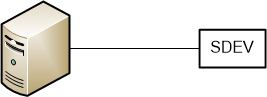
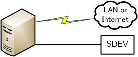
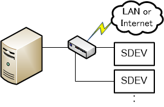
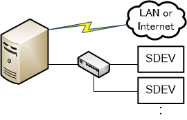

SDEV と PC の接続方法とそのメリット・デメリットについて、より詳しく説明します。
おさらい
SDEV と PC の接続方法について、SDEV の準備 では次の 2 つの方法を紹介していました。
- SDEV と PC を「Ethernet ケーブル」で直結する
- PC が接続されているネットワーク上に SDEV を接続する
それぞれの接続方法について、改めて詳しく説明します。
SDEV と PC を「Ethernet ケーブル」で直結する
この方法には、2 つの選択肢があります。
接続方法とメリット・デメリットは次の通りです。
| 接続方法 |
メリット |
デメリット |
|
1. 直接接続

|
- 特定の LAN ポリシーおよびトラフィックから接続を切り離します。
- IT 部門から予約済みの DHCP や静的 IP アドレスを入手する必要がありません。
-
最大の通信帯域幅が得られます。
|
- LAN およびインターネットからホスト PC が切り離されます。
- 他のホストから SDEV にアクセスできません。
|
|
2. 2番目の NIC との直接接続

|
- LAN ポリシーから接続を切り離します。
このような LAN ポリシーとして、DHCP の無効化、ブロードキャストトラフィックの禁止、ユニキャストトラフィックの制限などがあります。
-
接続を他の LAN トラフィックから切り離します。
-
最大の通信帯域幅が得られます。
|
- IT ポリシーおよび IT 手順によってこの種類の設定が許可されていない場合があります。
- 帯域幅を最大化するには、PCI スロットまたはその他の高速 I/O に 2 番目の NIC を接続する必要があります。
- 他のホストから SDEV へのアクセスが容易ではありません。
- LAN 上にある既存の IP アドレスと 2 番目の NIC の IP アドレスが競合しないようにする必要があります。
- 設定および構成が複雑です。
|
PC が接続されているネットワーク上に SDEV を接続する
こちらも 2 つの選択肢があります。
接続方法とメリット・デメリットは次の通りです。
| 接続方法 |
メリット |
デメリット |
|
3. アンマネージドスイッチ

|
- ホスト PC と SDEV との接続をほとんどの LAN ポリシーから切り離します。
このようなポリシーとして、DHCP の無効化、ブロードキャストトラフィックの禁止、ユニキャストトラフィックの制限などがあります。
- 接続をほとんどの LAN トラフィックから切り離します。
- 他のホストから SDEV にアクセスできます。
-
構成が最も単純です。
-
複数の SDEV を制御できます。
|
- 他のホストから SDEV にアクセスできます。
- 通信帯域幅が、ホスト PC からの他のネットワークトラフィック（HTTP や電子メールなど）の影響を受ける場合があります。
- IT 部門から予約済みの DHCP または静的 IP アドレスを入手する必要があります。
|
|
4. 2番目の NIC とアンマネージドスイッチ

|
- LAN ポリシーから接続を切り離します。
このような LAN ポリシーとして、DHCP の無効化、ブロードキャストトラフィックの禁止、ユニキャストトラフィックの制限などがあります。
-
接続を他の LAN トラフィックから切り離します。
-
最大の通信帯域幅が得られます。
-
複数の SDEV を制御できます。
|
- IT ポリシーおよび IT 手順によってこの種類の設定が許可されていない場合があります。
- 帯域幅を最大化するには、PCI スロットまたはその他の高速 I/O に 2 番目の NIC を接続する必要があります。
- 他のホストから SDEV へのアクセスが容易ではありません。
- LAN 上にある既存の IP アドレスと 2 番目の NIC の IP アドレスが競合しないようにする必要があります。
- 設定および構成が複雑です。
|
IP アドレスの決定
出荷時の SDEV は、接続方法の違いにかかわらず IP アドレスを自動取得するように設定されています。
自動取得時の IP アドレスは、Auto IP 機能で決定されます。
具体的な決定手順は次の通りです。
- ネットワーク上の DHCP サーバーにアドレスを要求します
- DHCP サーバーから応答があった場合は、DHCP サーバーから割り当てられた IP アドレスに決定されます
- DHCP サーバーから応答が無い場合、169.254 で始まる IP アドレスに決定されます
通常、自動取得のままでも問題ありませんが、SDEV の IP アドレスを固定化することによっていくつかのメリットがあります。
詳しくは、 SDEV IP アドレスの固定化 を参照してください。